01單字本
收集與理解：輸入單字後，AI 自動生成中文、音標、詞性和例句，並提供發音。
9:41
9:41
9:41
一套為自己打造的英文學習工具，從看影集整理對白，到收藏、練習與複習單字。
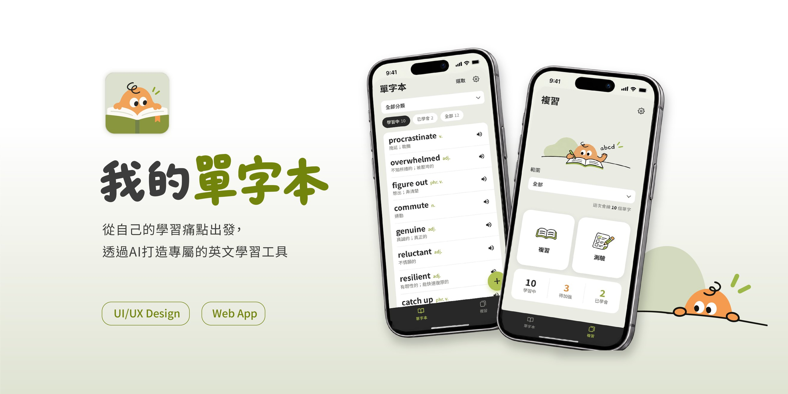
學了很多單字，卻沒有一個地方能把它們留下來
我主要透過影片與文章學英文，但查過的單字沒有地方記錄、也沒有後續複習，很快就忘了。
讓學習更簡單
我把 App 規劃成兩個主要空間：單字本負責收集與理解，複習負責記憶與練習。
收集與理解：輸入單字後，AI 自動生成中文、音標、詞性和例句，並提供發音。
記憶與練習：翻卡主動回想意思，再用例句拼字確認熟悉程度。
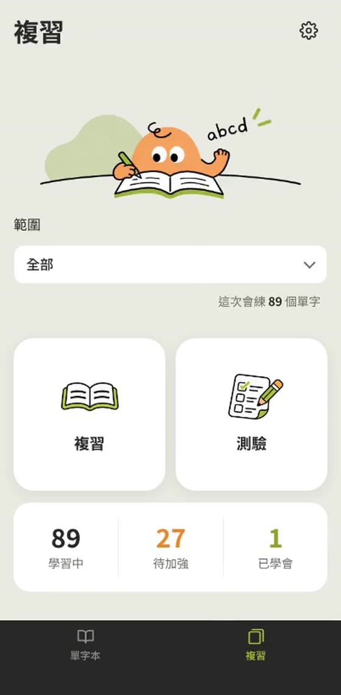
不熟的字集中練習：答錯或看提示的字會收進這裡，就像我以前的單字小筆記本。
從收藏單字，到真正能夠運用
一開始我只想要一個能快速收單字的地方。做著做著開始想：存下來，就代表學會了嗎？所以陸續加入翻卡複習、例句拼字和自動發音，讓它從收集工具變成能持續練習的工具。
PROBLEM
每翻一張卡就要選熟悉或不熟悉。還在背的階段就被迫下判斷，讓複習變得有壓力。
DECISION
拆成兩個區塊：「複習」只翻卡看中文和例句，不記錄結果；「測驗」改成例句拼字，答錯的字才進待加強清單。
BEFORE
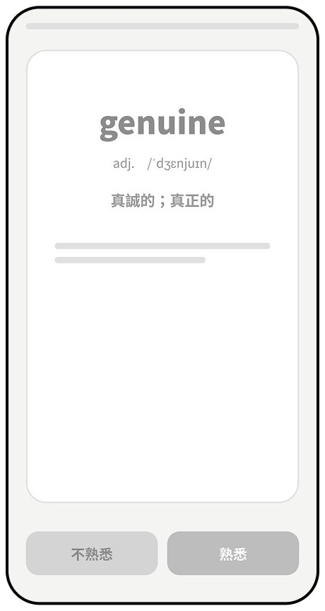
每看一個單字，
都要選熟悉或不熟悉
覺得每次點按鈕
都很有壓力
AFTER
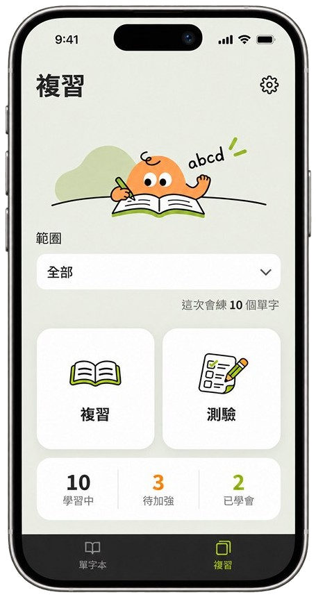
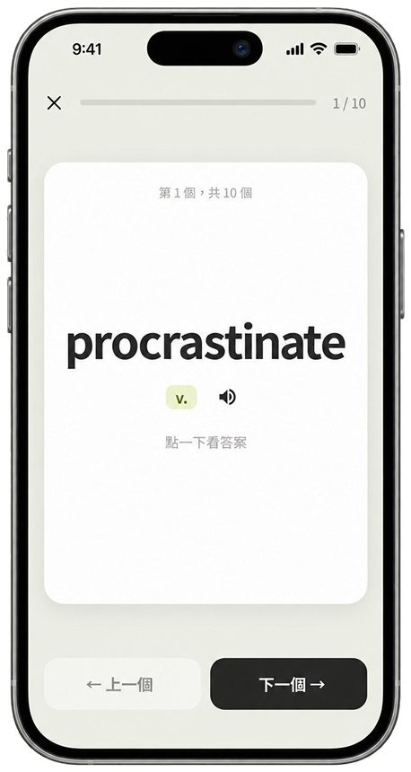
分成複習、測驗兩個地方，
複習可以沒有壓力地反覆看
PROBLEM
翻卡後自己選「熟悉／不熟悉」，但看到單字覺得熟悉，不代表真的拼得出來。
DECISION
改成例句填空，根據上下文拼出單字。答錯或看提示的字，會進入待加強清單。
參考我在 Epop 用過的例句拼字：選擇題容易用猜的，自己拼才會在腦中主動回想。
BEFORE
看到單字，自行選擇
「熟悉」、「不熟悉」
AFTER
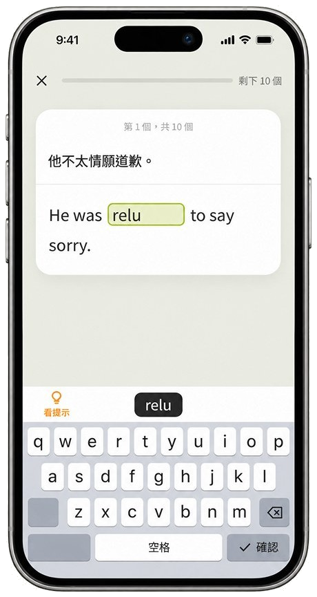
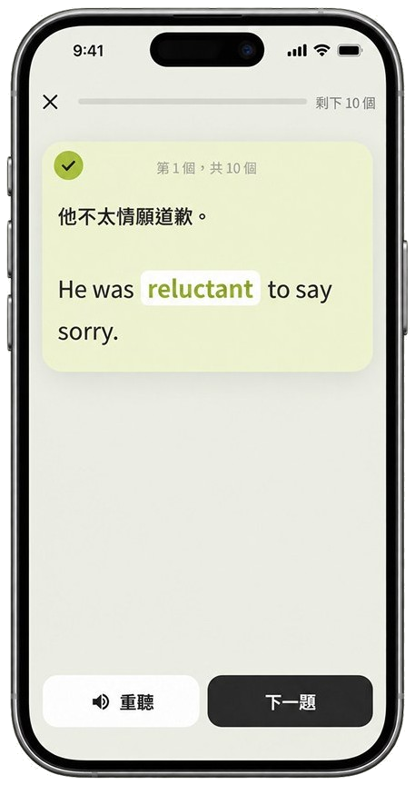
看例句，直接拼出單字
PROBLEM
發音對我的記憶很重要，但每次都要手動點播放，會打斷閱讀節奏。
DECISION
切換單字時自動播放發音。
好的體驗不只是介面好操作，也要配合使用者的行為習慣。
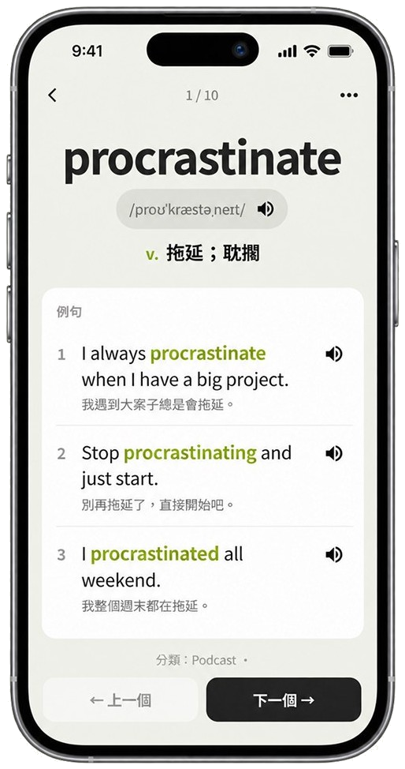
一本有溫度的數位單字本
背單字本來就有點枯燥，所以我希望畫面安靜好讀，再放一個橘色小角色，陪自己一起看書、寫字、做測驗。
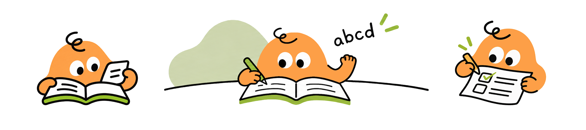
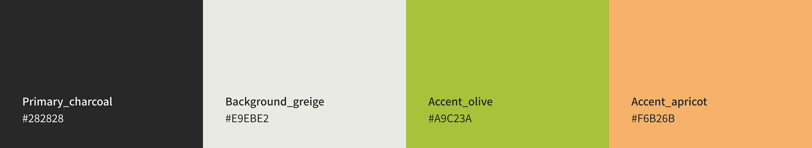
從設計想法，到可以實際操作的產品
我負責問題定義、功能規劃、視覺與互動決策，Claude 協助實作。AI 降低了實作門檻，但方向和取捨還是由我判斷。
我希望切換單字時就聽到自然的發音，但試了幾種做法都不理想。
好的設計也要理解技術限制，在不同方案之間找到合適的取捨。
從單字收集，到建立自己的英文學習流程
我試過學習 App、VoiceTube 和看影集，但看影集容易只顧劇情，停下來查單字又會打斷聽力。下面是我原本看影集學英文的過程，以及我在每個卡住的地方怎麼解決。
痛點
只顧劇情，學不到東西
痛點
聽不懂又不想停下來
痛點
查單字會打斷聽力
痛點
看了很多集，卻不知道自己學到了什麼
痛點
查過的字又忘了
解法
AI 先把對白整理成句型、單字和片語
解法
第一次看開中英字幕，專心看懂劇情
解法
不邊看邊查，看完再集中學
解法
AI 整理好筆記，我可以自由編輯
解法
標記的字自動進單字本，用翻卡和拼字複習
左右滑動查看完整流程 →
AI 會把整部影集的對白，整理成適合我學習的句型、單字和片語。看完影片後，我再回到這裡慢慢學。
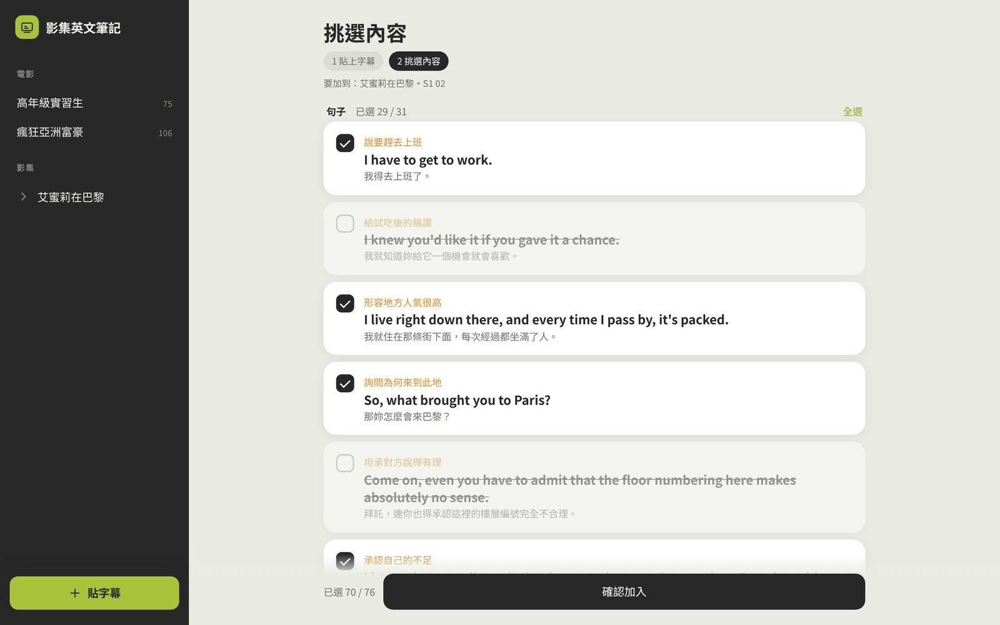
影集英文筆記
負責整理
AI 先把對白整理成句型、單字和片語，看劇時不用停下來查；整理好的筆記可以自由編輯，看完就知道自己學了什麼。
我的單字本
負責複習
標記的單字自動加進單字本，再用翻卡和例句拼字持續複習，查過的字不會再忘。
影集筆記像課本，單字本是練習本。第二次看的時候，更聽得懂角色在說什麼。
從自己的需求出發，做出真正能用的學習工具
原本散在影片、文章和筆記裡的學習內容，現在整合成一套我每天在用的流程。
目前成果
下一步
AI 讓實作變容易，但真正重要的是把問題定義清楚，並持續找到更適合的解法。收集與整理已經在實際使用；複習能不能改善長期記憶，還需要時間驗證。